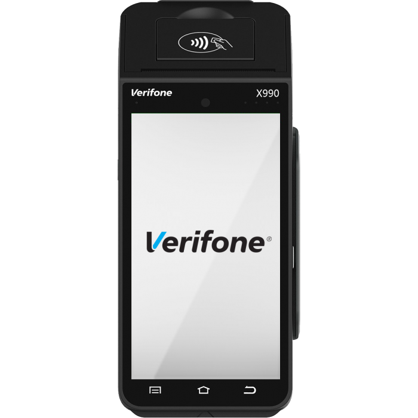
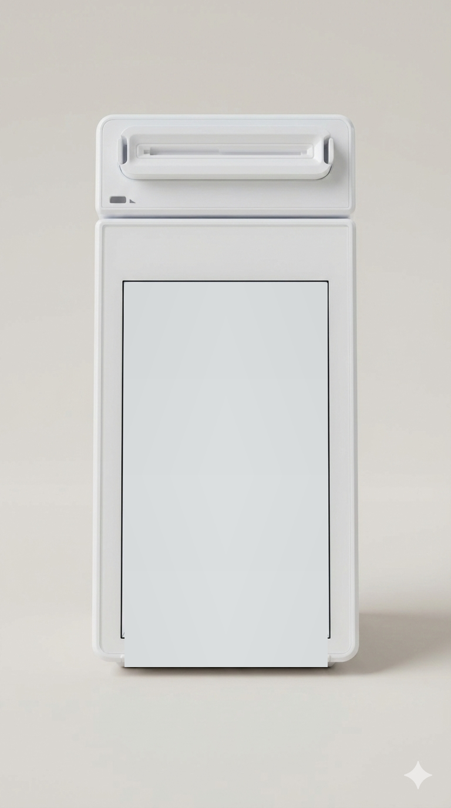
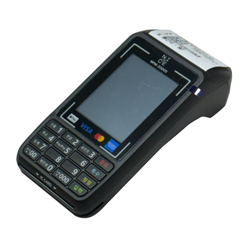

About Me
Professional Background
현재 직책: 디바이스 개발팀
회사: 나이스정보통신
경력: 소프트웨어 개발 4년 이상
위치: 대한민국
핀테크 도메인에서 4년 이상의 깊이 있는 경험을 가진 풀스택 소프트웨어 개발자입니다. 현재 나이스정보통신의 디바이스 개발팀에서 **Android 네이티브 앱부터 Linux 임베디드 시스템까지** 결제 생태계 전반을 아우르는 개발을 담당하고 있습니다.
**Kotlin + Jetpack Compose**를 활용한 모던 Android 개발부터 **C/C++ Linux 임베디드 시스템**까지, 하드웨어와 소프트웨어를 연결하는 복합적 역량을 보유하고 있습니다. 특히 **EMV 국제 표준, Mastercard/VISA 인증, 다중 VAN사 통합** 등 핀테크 도메인 전문성이 강점입니다.
**단독 개발로 5개 이상의 상용 서비스를 런칭**하며, 설계부터 운영까지 제품 전 생명주기를 관리하는 경험을 쌓았습니다. 새로운 기술을 빠르게 습득하고 복잡한 시스템을 안정적으로 구현하는 것에 열정을 가지고 있습니다.
Project Showcase
NICE Information & Communications
1. 차세대 Android 결제 단말기 (X990 CAT)

역할: 단독 기획·설계·개발 (메인 개발자 / PM 겸직) · 약 9개월 · 서브 개발자 2명 + 사내 디자이너 1명과 협업
배경
NICE의 기존 결제 단말기는 모두 Linux 기반으로 결제 외 기능 확장에 큰 제약이 있었음(광고, 사용자 친화적 UI, 설정 확인 등). 글로벌하게 결제 시장이 Android 생태계로 이동하고, 풀터치 스크린 기반의 광고·관리·친숙한 UX 수요가 증가하면서 회사 차원의 차세대 단말기 전환이 시급해진 상황.
그러나 회사는 Android 결제 단말기 개발 경험·레퍼런스가 전무했고, 기술 스택·인프라·인력 모두 부족한 상태에서 6개월(파생 포함 9개월) 내 첫 Android 단말기 출시라는 일정 압박이 있었음.
미션
앱 구조·통신 구조·기술 스택이 0인 상태에서 단독으로 기획서·화면명세서부터 작성하고 전체 아키텍처·통신·확장성을 설계. 6개월 내 출시 + 시큐어 장비 인증 획득을 동시에 달성하는 것이 목표였음.
메인 개발자 + PM 역할로 서브 개발자 2명, 사내 디자이너 1명과 함께 진행. 아키텍처·디자인·동작 플로우의 모든 결정권을 가지고 처음부터 끝까지 책임짐.
실행
- Modern Android 스택 채택 — 처음부터 Jetpack Compose + Hilt + Coroutines/Flow + MVVM 기반 설계. HW 제어가 중심인 단말기 특성상 네이티브 언어(Kotlin/NDK)로 일관성 확보.
- 8개 모듈로 의도적 분리 — App · Feature(UI) · HW · Payment · Data · DI · Service · ViewModel로 책임을 분리해 결제 앱 특유의 반복 패턴에 일관성과 유지보수성 부여.
- AIDL 70개 HW 인터페이스 통합 — EMV, 암호화, 스캐너, IC/RF/MSR 카드리더 바인딩. 가장 까다로웠던 부분은 충전 크래들과의 무선 Serial 통신 구조 (전원·시리얼·무선이 동시에 얽힌 구조 이해와 안정화).
- [시행착오] 자체 암호화 모듈로 전환 — 초기에는 제조사 NDK의 암호화·민감 데이터 처리를 그대로 사용했으나 통신 스펙 커스터마이징의 한계를 만남. 결국 Kotlin/NDK로 RLE 압축, 키 저장, 키 암호화 등 결제 승인 보안 로직을 직접 재구현.
- OCR·TRS 별도 모듈화 — 면세/외국인 환급용 특수 기능을 기존 결제 플로우에 끼워넣지 않고 독립 모듈로 분리해 재사용성·유지보수성 확보.
- SW 자체 쓰로틀링 알고리즘 — 다중 HW 병렬 제어로 발생한 발열·랙 이슈를 SW 레벨에서 직접 해결.
결과
- 상용화 출시 완료 — 일반형 X990 결제 단말기 + 글로벌 패션 브랜드 H&M 매장 도입 예정(2026.06~) + TRS 기능 출시 예정(2026.06).
- 코드 재사용률 89.8% → 95% — 전체 코드 대비 제조사 비종속 코드의 비율(타 제조사 디바이스로 그대로 이식 가능한 부분). 시장 상황에 따라 즉시 디바이스 확장 가능한 구조.
- 출시 후 CS 인입 거의 없음 — 즉시 강제 업데이트 + 사용자 지정 시간 자동 버전 체크 시스템으로 빠른 사후 대응 구조 확보.
- 사업 확장 가능성 — 여권 OCR + 무선 POS 연동 덕분에 다양한 TRS 판매처·무선 POS 가맹점에서 긍정적 검토 진행 중.
- 본인 성장 — Android 앱 전반 설계 역량, 제조사 SDK 분석·HW 제어 역량, 결제 도메인 지식(포인트/TRS/POS 연동) 습득.
- Hilt 기반 8개 모듈 의존성 주입 구조 (data · di · model · nav · receiver · service · ui · viewmodel)
- Kotlin Coroutines/Flow 활용 반응형 프로그래밍 및 성능 최적화
- Jetpack Compose (Material 3) 기반 선언형 UI — 커스텀 키패드, 서명 캡처, 영수증 출력
- AIDL 기반 X990 하드웨어 서비스 바인딩 (IEMV, VFK, 스캐너, IC/RF/MSR 카드리더)
- SEED 암호화 및 TMS 연동을 통한 암호키/가맹점 데이터 관리
- VAN 프로토콜 통신 (CRC16 체크섬) 및 실시간 거래 승인 처리
- 서명 캡처 이중 제출 방지 가드 (UI + ViewModel 듀얼 레이어 검증)
- 소프트웨어 자동 업데이트 (TMS 연동, 업데이트 시간 예약 설정)
- Retrofit + OkHttp 기반 통신 레이어, Room 기반 거래 데이터 영속성
- Android Keystore + 암호화 통신 + PCI DSS 준수
- JUnit, Mockk 기반 유닛 테스트 및 UI 테스트 자동화
- 규모: 469커밋, Kotlin 193개 파일, 8개 ViewModel, AIDL 70개 인터페이스
2. BGF리테일 CU Android 결제 단말기 (BAM-V1)

역할: 단독 개발 (설계 · 개발 · CS) — Android 앱 + LINUX 펌웨어 양쪽을 모두 다룰 수 있는 유일한 인력으로 PoC부터 현장 운영까지 책임
배경
전국 1위 편의점 체인 CU(BGF리테일)가 기존 Linux 기반 결제 단말기를 Android 기반으로 교체하는 시점. 시장에서는 TOSS·NAVER가 자체 Android 결제 단말기로 점유율을 빠르게 가져가는 상황이었고, NICE도 자체 Android 결제 단말기 출시가 사업적으로 시급했음.
BGF의 핵심 요구는 ① 결제 속도 ② 다양한 결제 수단 호환성(유선 Serial + 무선 BLE) ③ Android 관리·업데이트·원격 제어·광고 기능. 특히 폐쇄망 점포에서 인터넷 없이 Serial 통신만으로 100MB+ 앱 업데이트가 가능해야 한다는 까다로운 제약이 있었음. NICE가 Android 결제 단말기를 자체 설계해 공급하는 첫 번째 사례이자, Android 결제 단말기 시장 진출의 발판이 되는 프로젝트.
미션
구조·동작 방식 모두 0인 상태에서 단독으로 처음부터 설계. 사내에 LINUX 펌웨어 인력과 Android 앱 인력이 따로 있었으나, 둘 다 다룰 수 있는 사람은 본인 뿐이어서 설계·개발·운영·현장 CS까지 전 과정 책임.
가장 큰 도전은 24시간 365일 무중단 운영 품질 — 결제 단말기는 1분이라도 멈추면 결제 손실이 발생하므로, 광고 송출로 인한 발열, Serial 프로토콜의 물리적 속도 한계, 멀티 프로토콜 동시 처리 충돌을 모두 해결해야 했음.
실행
- 핸들러 레지스트리 패턴 채택 — 11개 전문 핸들러로 결제 커맨드 분리. 비슷한 구조에 인자만 다른 기능이 계속 추가될 것을 예상해 Strategy 패턴 대신 레지스트리로 확장성·유지보수성 우선.
- 4 Serial + BLE GATT + USB 멀티 프로토콜 — 4개 Serial 포트가 각각 독립 I/O 스레드 + 4가지 전문 파싱 로직으로 동작. 사실상 4개의 다른 기능을 동시에 안 꼬이게 개별 처리하는 구조 설계가 가장 까다로움.
- Serial → BLE 자동 페일오버 — POS 비정상 동작·통신 장애 시 모바일 POS 앱과 BLE로 연결해 결제 가능하게 한 비상 결제 기능. 실제 반년 동안 4건의 POS 오류 상황에서 발동되어 결제 손실을 막음.
- 발열 디버깅 (가설→검증) — 에이징 테스트 모니터링으로 특정 동작에서만 발열 확인 → 프로세스별 CPU 점유율 분석 → CPU 렌더링 필수/비필수 분리 → 대체 가능한 부분 모두 SoC HW 가속으로 이전.
- XModem 속도 한계 돌파 — 기존 POS 연동 프로토콜이 모두 .so로 묶여 있어 NDK/JNI(C) 기반으로 통합. C타입 포트를 가상 시리얼 포트로 활용해 XModem 프로토콜의 물리적 속도 한계를 우회.
- [시행착오 1] 전문 처리 위치 변경 — 처음엔 모든 데이터 전문 처리를 IFM(리더기 프로세서)에서 하려 했으나 2중 통신으로 타이밍 이슈와 화면 처리 꼬임 발생. App에서 상호인증·무결성 검증을 처리하고 IFM은 카드 리딩·암호화 등 보안 정보만 담당하는 구조로 재설계.
- [시행착오 2] Kotlin 100% 전략 포기 — 모든 기능을 Kotlin으로 가려 했으나 속도·보안 이슈로 카드 리딩 로직과 HW 제어 상태 관리는 NDK로 분리.
결과
- 4,000대 이상 전국 CU 편의점 상용 운영, 일평균 10만 건 이상 거래 처리.
- 응답 지연 50% 개선 (200~500ms → 100~300ms), 앱 응답 속도 30% 개선 (HW 가속).
- 업데이트 다운로드 효율 17,000% 개선 — 원래 XModem으로 2시간 40분 걸리던 100MB 다운로드를 40초대로 단축 (C타입 가상 시리얼 활용).
- 발열 완전 해결 — 내부 CPU 62℃ → 50℃, 외부 스크린 40℃ → 34℃. 24/7 무중단 운영 환경에서도 안정성 확보.
- 출시 후 6개월간 민원 1건 — 원격 모니터링 시스템으로 즉시 분석·조치 가능한 운영 인프라까지 구축. 3,000대 이상 배포 후 멈춤 이슈 0건.
- 본인 성장 — 대규모 프로젝트 코드 베이스 설계 역량 + 운영 중 발견한 문제를 기존 구조를 깨지 않고 흡수할 수 있는 "변경에 열린" 설계 감각 체화.
- MVVM 아키텍처 + 핸들러 레지스트리 패턴 (11개 전문 핸들러로 결제 커맨드 처리)
- Kotlin Coroutines/Flow 기반 반응형 상태 관리 (AtomicBoolean + Lock 스레드 안전성)
- NDK/JNI 네이티브 C 코드로 XModem 프로토콜 및 OpenSSL 통합 구현
- BLE GATT 서버 — 블루투스 본딩, 상호 인증, Serial ↔ BLE 자동 페일오버
- SEED 암호화 (한국 정부 표준) 및 상호 인증 프로토콜 구현
- 디바이스 무결성 검증 및 시스템 키 주입(DIK) 관리
- Jetpack Compose 30+ 화면 — 커스텀 키패드, 서명 캡처, 메뉴 시스템
- ExoPlayer 기반 광고 미디어 시스템 (CSV 중앙관리, H.264 HW 가속, GPU 메모리 최적화)
- 프로세스 사용 최적화 및 CPU 최적화 직접 수행
- 부트 시 자동 시작, GPIO 하드웨어 전원 제어, 화면 밝기 제어
- 규모: 344커밋, Kotlin 99개 파일, C++ 네이티브 코드 포함, 7개+ 결제 수단 지원
3. Mastercard / VISA RF LV2 컨택리스 인증 내재화
역할: Contactless 에뮬레이터 개발 + RF LV2 브랜드사 테스트 프로그램 검증 — 사내 EMV 노하우 0인 상태에서 두 브랜드 모두 인증 획득
배경
회사 차원에서 글로벌 카드 브랜드사의 RF 컨택리스 결제 인증을 내재화하기로 결정. 그러나 사내 EMV 노하우는 전무했고, 이전에 인증 시도 이력도 없는 0의 상태였음.
인증 주체는 EMV 북에 따른 자체 테스트 에뮬레이터를 반드시 보유해야 하며, 이는 각 회사의 자산이라 외부에서 솔루션을 제공받을 수 없는 영역. 즉 "직접 만들지 않으면 인증을 못 받는" 구조.
미션
Mastercard · VISA 각 8개월의 인증 일정 안에서 Contactless 에뮬레이터 개발과 RF LV2 브랜드사 테스트 프로그램 검증까지 모두 완료해야 했음. 인증 진행 일정까지 포함된 기한이라 실 개발 가능 기간은 반년도 채 되지 않는 빠듯한 상황.
실행
- PyQt5 기반 카드 테스터 에뮬레이터 자체 개발 (Mastercard) — 외부 솔루션 부재로 EMV 북 사양에 맞춰 처음부터 직접 구현.
- VISA 인증용 단말기 앱 + 카드 에뮬레이터 통합 개발 — 두 브랜드의 서로 다른 사양을 모두 수용.
- [가장 까다로웠던 부분] 동일 태그·상황별 분기 처리 — 같은 EMV Tag라도 상황에 따라 응답이 달라져야 하므로, 에뮬레이터가 상황 별로 판단해 각기 다른 응답을 내도록 설계.
- 사전 검증 프로그램으로 인증 비용 최소화 — Function Test / Performance Test 등 단계별 인증 절차에서 한 번 Fail이 나면 400건+ 전체 테스트 케이스를 재실행해야 함. 이를 막기 위해 실 인증기관 테스트 전에 자체 검증할 수 있는 사전 검증 프로그램을 만들어 통과 후 인증 진행.
결과
- Mastercard · VISA 공식 LV2 인증 획득 — 사내 EMV 노하우 0인 상태에서 8개월 일정 안에 두 브랜드 모두 통과.
- 회사 사업 영역 확장 — 애플페이·NFC 결제 등 RF 결제가 시장에서 필수가 된 시점에 자체 RF 리더 탑재 단말기 출시가 가능해짐.
- 인증 모듈 재사용으로 인증 비용 절감 — GS칼텍스 주유소 무선 단말기로 처음 인증받은 모듈을 이후 출시되는 자체 단말기 리더기에 모두 탑재해, 단말 출시마다 들어가던 RF 인증 비용을 지속적으로 절감.
- 본인 성장 — EMV 컨택리스 표준·ISO 14443·RF 프로토콜 전반에 대한 깊이 있는 도메인 지식 확보. 이후 X990·CU 등 자체 Android 결제 단말기 보안 모듈 설계의 토대가 됨.
- EMV 컨택리스 결제 표준 및 카드 브랜드 규격 구현
- PyQt5 기반 카드 테스터 Emulator 개발 (Mastercard 인증용)
- VISA 인증용 단말기 앱 및 카드 Emulator 통합 개발
- EMV Tag 데이터 구조 분석 및 브랜드별 특화 태그 처리
- RF(Radio Frequency) 통신 프로토콜 및 ISO 14443 Type A/B 구현
- 실시간 거래 데이터 검증 및 인증 테스트 자동화
- 400건+ 테스트 케이스 사전 검증 자동화 프로그램
4. Linux 기반 통합 서명패드
역할: 단독 기획·설계·개발·검증 — 회사 최초 다중 VAN 통합 서명패드를 단독으로 끝까지 책임
배경
그동안 시장에는 각 VAN사 전용 서명패드만 존재했고, 여러 VAN사의 통신 전문을 모두 수용해 일관되게 동작하는 통합 서명패드는 없었음. VAN사별로 서로 다른 통신 스펙을 하나의 코드베이스에서 안정적으로 동작시키는 것이 기술적으로 까다로워서였음.
마침 NICE정보통신 / NICE페이먼츠 / KIS정보통신 3사 합병 이슈가 부상하면서 3사 합작 결제 단말기가 생길 수 있는 상황 — VAN사 구애받지 않는 통합 서명패드의 시장 필요성이 빠르게 커진 시점.
미션
각 VAN사의 통신 전문을 분석·파싱하고, 이를 하나의 통합 동작 로직으로 묶는 설계·개발을 단독으로 모두 책임. NICE · KIS · NPG · 통합 스펙 4개 VAN 사양을 하나의 코드베이스에서 일관되게 동작시키는 것이 핵심 미션.
실행
- Serial 패킷 단위 분석 → VAN 식별 → 통합 로직 매칭 — Serial 리딩 단에서 packet 단위로 데이터를 받아 byte 단위로 분석. 어떤 VAN사 전문인지를 먼저 판정한 뒤, 기능 단위로 통합 전문 로직에 매칭해 일관되게 동작하도록 설계.
- VAN 자동 감지 — 전문 헤더 구조 기반 식별 — 별도 협상 없이 각 VAN사의 전문 헤더 구조를 분석해 자동 식별하는 로직 구현.
- NFC / 바코드 / EMV IC 통합 — 결제 입력 수단도 RF(NFC), 바코드 스캐너, EMV IC 카드를 하나의 디바이스에서 모두 수용.
- Linux 임베디드 환경 최적화 — 하드웨어 드라이버 최적화, 메모리 관리, 통신 암호화·거래 데이터 보안 처리까지 모두 직접 처리.
결과
- 회사 최초 다중 VAN 통합 서명패드 상용화 — NICE · KIS · NPG · 통합 4개 스펙 모두 지원.
- 실제 의류 업체 도입 운영 중 — MLB · 내셔널지오그래픽 등 의류 브랜드 매장에서 사용 중.
- 회사 차원의 신규 시장 개척 — 그동안 VAN사 종속이라 진입할 수 없었던 통합 멀티패드 시장을 열음. VAN 합병/통합 이슈가 있는 고객사도 한 디바이스로 대응 가능해짐.
- 본인 성장 — 서로 다른 통신 스펙을 추상화해 하나의 일관된 로직으로 묶는 설계 감각 — 이후 X990·CU 단말기의 멀티 프로토콜 통합 설계에도 그대로 적용된 핵심 역량.
- NICE정보통신, KIS정보통신, NPG, 통합 스펙 4개 통신 프로토콜 구현
- RF(NFC), 바코드, EMV IC카드 결제 기능 통합 구현
- 멀티 VAN사 자동 감지 (전문 헤더 구조 기반) 및 스위칭 로직 설계
- 실시간 서명 캡처 및 전자서명 검증 시스템
- 하드웨어 드라이버 최적화 및 메모리 관리
- 통신 암호화 및 거래 데이터 보안 처리
5. Linux 기반 API 결제 단말기 플랫폼
역할: 무선/유선 단말기 개발 및 유지보수, 법인 전용 버전 12개 단독 개발 — NICE 메인 단말기 플랫폼으로 채택
배경
제조사·유선·무선 단말기 종류별로 소스가 모두 분리되어 있고, 수정 시기도 제각각이라 공통 적용이 필요한 로직을 일괄 반영하기가 어려운 상황. 신규 법인 서비스가 들어올 때마다 동일한 작업을 디바이스 수만큼 반복해야 하는 비효율 누적.
미션
단일 소스 기반으로 6개 기종을 동시에 지원하는 결제 단말기 플랫폼을 구축하고, 무선·유선 단말기 개발 및 유지보수, 그리고 법인 전용 버전 12개를 단독으로 개발.
실행
- 전처리 빌드 분기 기반 단일 소스 전략 — 디바이스마다 정말로 달라야 하는 부분만 빌드 시점 분기로 처리하고, 나머지 공통 로직은 모두 하나의 소스에서 공유. 별도 라이브러리 도입 없이도 6개 기종 일괄 빌드가 가능한 구조 확보.
- 6개 기종 공통 로직 추상화 — 하드웨어 종속성을 분리해 결제 로직을 디바이스 독립적으로 구현. 신규 디바이스 추가 시 분기 포인트만 채우면 동작하도록 설계.
- 유·무선 통신 통합 — WiFi · LTE · Ethernet · Serial을 한 플랫폼에서 모두 처리. EMV Level 2 인증 기반 IC카드 결제 통합.
결과
- NICE 메인 단말기 플랫폼으로 채택 — 회사에서 가장 메인으로 미는 단말기들의 결제 로직이 모두 이 플랫폼에 통합됨. 사용자는 환경에 따라 다른 디바이스를 사용해도 동일한 로직으로 결제 가능.
- 개발 효율 약 3배 향상 — 신규 법인 서비스 요청 시 6종 단말기에 일괄 공통 적용 가능. 이전 같으면 디바이스별로 따로 작업해야 했던 일이 한 번에 끝남.
- 50개+ 법인 전용 파생 제품 지원 — 하나의 플랫폼 위에서 법인 맞춤 버전을 빠르게 파생.
- C/C++ 기반 모듈형 API 아키텍처 설계
- 6개 기종 공통 로직 추상화 및 하드웨어 독립적 구현
- 무선(WiFi/LTE) 및 유선(Ethernet/Serial) 통신 통합 처리
- EMV Level 2 인증 기반 IC카드 결제 구현
- 실시간 펌웨어 업데이트 및 원격 관리 시스템
- 메모리 최적화 및 임베디드 성능 튜닝
- 전처리 빌드 분기 기반 단일 소스 멀티 디바이스 전략
6. 주유소 전용 무선 결제 단말기 (E1, GS칼텍스)

역할: 단독 설계·개발·현장 테스트 — 주유소 특화 다단계 결제 트랜잭션을 무선 환경에서 안정적으로 처리
배경
주유소 결제는 일반 결제와 구조가 다름 — 쿠폰·포인트·유류 할인·이벤트 할인·카드 할인 등 VAN에서 자체적으로 조회하고 할인 처리해야 하는 로직이 필수. 게다가 한 건의 결제가 서버와의 2~3회 transaction으로 이루어지는 다단계 구조라 일반 결제 단말기로는 대응이 불가능했음.
국내 주유소 시장은 SK · S-Oil · GS칼텍스 · E1 · 현대오일뱅크 등 주요 주유소가 모두 NICE 사용. 24시간 운영되는 환경의 안정성과 즉시 대응 역량이 핵심 신뢰 기준이었음.
미션
단독으로 설계·개발·현장 테스트까지 책임. 주유소는 거래 건수가 많고 단건 금액도 커서 실수 한 건이 큰 민원으로 직결 — "민원이 최대한 발생하지 않도록 만드는 것"이 최우선 미션.
실행
- 다단계 트랜잭션 설계 — 프리셋 → 주유 → 결제 — 한 결제 흐름을 여러 transaction으로 안전하게 진행하고, 중간 실패 시 망상 취소로 깨끗하게 롤백한 뒤 처음부터 재진행하도록 복구 로직 구현.
- 현장 테스트로 발견된 이벤트 미수신 이슈 대응 — 실 주유소 환경에서 이벤트 업데이트를 제때 못 받으면 할인금액이 의도와 다르게 결제되는 사례 발견. 이런 케이스에 대한 예외 처리를 폭넓게 적용해 잘못된 할인 결제를 차단.
- 4G/WiFi 무선 통신 + POS 연동 — 무선 환경에서 실시간 승인 시스템 구축, 주유기 POS와의 유량 데이터 동기화 처리.
- 주유소 환경 특화 최적화 — 방폭, 온도, 진동 등 일반 결제 환경과 다른 까다로운 물리적 조건 대응.
결과
- E1, GS칼텍스 전국 주유소 배포 완료, 현재 운영 중.
- 일평균 30만 건 이상 거래 처리 — 주유소 결제의 단건 금액이 큰 만큼 실 거래 규모가 큰 환경에서 안정적으로 동작 중.
- 본인 성장 — 다단계 트랜잭션의 실패 복구 설계, 무선 환경에서 결제 무결성을 보장하는 설계 경험. "민원이 발생하지 않게 만드는" 보수적·안전 우선 설계 감각 체화.
- E1, GS칼텍스 주유소 통신 스펙 맞춤 구현
- 주유 프리셋 → 주유 → 결제 다단계 트랜잭션 처리
- 4G/WiFi 무선 통신 및 실시간 승인 시스템
- 주유기 POS 연동 및 유량 데이터 동기화
- 주유소 환경 최적화 (방폭, 온도, 진동 대응)
- 거래 실패 시 망상 취소 → 자동 재진행 복구 로직
- 이벤트 미수신 등 현장 케이스 기반 예외 처리
KT Corporation
1. 기가지니 Android TV 전환 프로젝트 (Genie TV)
역할: 메인 화면 + 키즈 컨텐츠 플랫폼 개발자 — 모든 사용자가 가장 처음 보는 진입 화면 담당 · 10명 × 6팀 본부 구조
배경
OTT 중심으로 미디어 시장이 빠르게 재편되며, KT의 기존 Web 뷰 기반 셋톱박스로는 콘텐츠 생태계 확장이 어려워진 상황. 글로벌 트렌드도 Android TV로 이동 중이었음.
0부터 시작하는 대규모 전환 프로젝트로, Android로 설계되지 않은 기존 디바이스(Linux 기반)에 AOSP를 포팅하고, 기존 리모컨 UX를 그대로 유지하면서 OS와 UI 전체를 갈아끼우는 작업. 셋톱박스 특성상 24/7 운영 환경 + OTA 업데이트 안정성까지 함께 보장해야 했음.
미션
본인은 메인 화면 + 키즈 콘텐츠 플랫폼 담당. 메인 화면은 모든 사용자가 가장 처음 보는 진입점이라 모든 콘텐츠를 오류 없이 표시해야 하는 가장 중요한 영역.
성능 KPI는 명확했음 — 4GB 메모리 자원 내에서 버벅임 없이 모든 기능이 부드럽게 동작해야 함. 셋톱박스의 제한된 자원 안에서 UX 품질을 사수하는 것이 핵심.
실행
- MVVM / MVP 혼용 설계 — 메인 플랫폼에서 진입한 콘텐츠가 다시 별도의 새로운 화면을 띄우는 구조라, 콘텐츠 구조에 따라 두 패턴을 의도적으로 분리해 적용.
- 체감 지연 최소화 — 사용자가 실제로 느끼는 지연은 KT 내부의 프로세스 관리 알고리즘을 활용해 해결.
- HW 한계는 시각적 트릭으로 — 부팅 지연 등 HW 영향이 커서 SW로 해결 불가한 부분은 애니메이션을 활용해 시각적으로 느려 보이지 않게 처리.
- 설계 단계에 시간을 집중 투자 — 셋톱박스 환경은 시행착오 비용이 크기 때문에, 초기 설계를 오랜 기간 철저하게 가져가서 이후 개발은 설계대로 진행되도록 사전에 리스크를 제거.
- Leanback 기반 TV UX — 리모컨 D-pad 포커스 처리, TV 친화적 라인업/카드 UI 등 Android TV 특화 요소를 적용하면서 기존 사용자의 리모컨 사용 습관을 유지.
결과
- 2022 상반기 Genie TV 정식 런칭 — 전국 기가지니2/3 디바이스 전체를 Web View 기반 Olleh TV에서 Android 기반 Genie TV로 마이그레이션 성공.
- 전국 TV 시청자의 56% 점유 — 본인이 담당한 메인 화면은 Genie TV 전체 사용자가 모두 거치는 진입 화면.
- 출시 3개월간 큰 민원 없음 — "업데이트 시간이 길다"는 의견 외에는 인입 거의 없었고, 일부 개체 일시 멈춤도 재부팅으로 해결되는 수준의 안정성.
- 본인 성장 → 이후 NICE 결제 단말기 개발에 직접 연결 — AOSP를 실 산업 환경에서 다루고 상용화까지 해본 경험으로 Android OS 튜닝과 HW 제어 역량을 확보. 이 역량이 이후 NICE 결제 단말기(X990, CU)의 AIDL 기반 HW 제어 설계에 그대로 이어짐.
- Android TV 메인 애플리케이션 설계 및 개발
- 키즈 컨텐츠 플랫폼 기획 및 개발
- 부가 서비스 앱 통합 및 연동 시스템 구축
- 미디어 콘텐츠 재생 및 배포 플랫폼 개발
- 크로스 플랫폼 마이그레이션 (Web View → Android TV) 주도
- Android TV SDK 및 Leanback Library 활용 (리모컨 D-pad 포커스, 라인업/카드 UI)
- MVVM / MVP 혼용 — 콘텐츠 구조에 따른 패턴 선택
- 4GB 메모리 환경의 성능 최적화 및 애니메이션 기반 체감 지연 보완
2. 키즈랜드 동화 콘텐츠 자동 페이지 분할 시스템
역할: 시스템 기획·설계·개발 단독 진행 — 인턴 프로젝트로 시작해 KT 키즈랜드 전체 동화 콘텐츠에 적용
배경
KT 키즈랜드의 동화 콘텐츠는 원작 동화책 기반이지만 형태는 애니메이션이라 실제 책처럼 문구·페이지 단위 구분이 존재하지 않았음. 시스템 도입 전에는 앞·뒤 10초 단위 타임프레임 이동 기능만 가능해, 영유아 시청자가 원하는 장면으로 정확히 돌아가기가 어려웠음.
대상 콘텐츠는 50편 이상의 동화(편당 5~10분). 인턴 과제로 받은 "키즈랜드 콘텐츠 개선" 주제 안에서, 동화책처럼 문단·페이지 단위로 자동 분할하자는 아이디어를 본인이 직접 기획하고 가져옴.
미션
시스템 기획·설계·개발 전 과정을 단독으로 책임. 정확도 목표는 명확함 — 실제 존재하는 원작 동화책의 페이지 구분과 동일하게 자동 분할되어야 함.
처리 시간 목표는 한 편당 약 3분 이내로 잡고, 운영은 콘텐츠 업로드 시 자동 트리거 방식을 전제로 설계.
실행
- K-means + DBSCAN 두 알고리즘 조합 설계 — 성우 발화 텍스트를 구문/문단 단위로 묶기 위해 K-means(텍스트 클러스터링), 영상 프레임을 이미지 벡터로 변환해 같은 페이지에 속하는 장면을 묶기 위해 DBSCAN(밀도 기반 클러스터링)을 각각 적용.
- FFmpeg + OpenCV 파이프라인 구축 — 영상에서 프레임을 추출하고, OpenCV로 이미지 벡터화 후 유사도 검증을 거쳐 페이지 단위로 분할.
- [시행착오 — 가장 큰 난관] 유사도 임계값 튜닝 — 임계값 설정에 따라 처리 결과가 천차만별로 갈렸음. 임계값 조절에 가장 많은 시간을 투자하며 원작 동화책 기준과 가장 일치하는 값을 실험적으로 확보.
- 자동 트리거 운영 — 콘텐츠 업로드 시 파이프라인이 자동 동작하도록 설계해 수작업 개입 없이 신규 콘텐츠도 즉시 처리되게 함.
결과
- KT 키즈랜드 전체 동화 콘텐츠(50편 이상)에 페이지 단위 구분 상용 적용, 현재까지 운영 중.
- 분할 정확도 100% — 50편 전체가 원작 동화책의 페이지 구분과 일치하는 결과 달성.
- 편당 처리 시간 약 3분 — 기존 10초 단위 타임프레임 이동만 가능하던 환경 대비 사용자가 "원하는 장면"으로 정확히 점프 가능한 UX로 전환.
- 사용자 임팩트 — 영유아 시청자가 원하는 장면으로 돌아갈 수 있게 되면서 특정 장면 반복 시청 횟수 폭증.
- 본인 성장 → 이후 결제 단말기 미디어 처리로 연결 — 영상/이미지 처리 감각과 알고리즘적 사고, 다양한 Player 활용 역량이 이후 NICE CU 단말기의 ExoPlayer 기반 광고 미디어 시스템(H.264 HW 가속, GPU 메모리 최적화) 설계에 그대로 이어짐.
- FFmpeg 라이브러리를 활용한 영상 프레임 추출 및 분할 처리
- OpenCV 기반 이미지 벡터 변환 및 유사도 검증
- 머신러닝 클러스터링 알고리즘 — K-means(텍스트 구문/문단 분석), DBSCAN(영상 페이지 군집화)
- 대용량 미디어 파일 처리 파이프라인 설계
- IPTV 서버 연동 및 콘텐츠 업로드 시 자동 트리거 통합
- 유사도 임계값 튜닝을 통한 원작 동화책 기준 일치도 100% 달성
3. AI 레크리에이션 플랫폼 프로젝트
개요: TV 내 참여형 게임 개발 (모션 인식 기반 인터랙티브 게임)
역할: 영상처리 기능 개발
- 공채 인턴 프로그램 대상 수상
- Brain-pose 기반 실시간 모션 인식 시스템 개발
- Skeleton Detection 및 키포인트 추출 기술 구현
- 기울기 데이터 정제 알고리즘 개발
- 오차율 계산 수학적 모델링 및 통계 분석
- 3D 좌표계 기반 각도 및 거리 계산
- 실시간 피드백 시스템 및 게임화 요소 구현
Personal Projects
🏥 Korean Medicine Clinic Website
한의원 운영을 위한 풀스택 웹 애플리케이션. Django 프레임워크를 활용하여 서버사이드 렌더링 방식으로 개발했으며, 관리자가 코딩 지식 없이도 웹사이트의 모든 콘텐츠를 관리할 수 있도록 구현했습니다.
주요 기능
- 관리자 대시보드: Django Admin 커스터마이징으로 비개발자도 콘텐츠 관리 가능
- 반응형 웹 디자인: 모바일/태블릿/PC 모든 기기 지원
- 진료 예약 시스템: 진료 분야별 상세 정보 제공
- CMS 구축: 11개 데이터 모델로 구성된 동적 콘텐츠 관리
- SEO 최적화: 검색 엔진 최적화 및 메타 태그 관리
기술적 성과
- 데이터베이스 설계: PostgreSQL 11개 모델로 병원 정보 체계적 관리
- 풀스택 개발: 데이터베이스부터 배포까지 전 과정 경험
- 클라우드 배포: 실제 배포 가능한 수준의 완성도 높은 애플리케이션
- 버전 관리: Git을 활용한 개발 워크플로우 구축